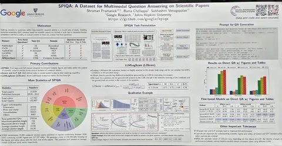
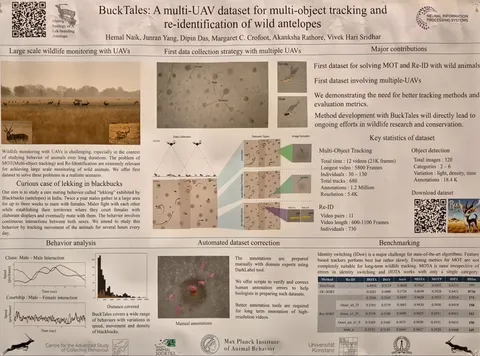
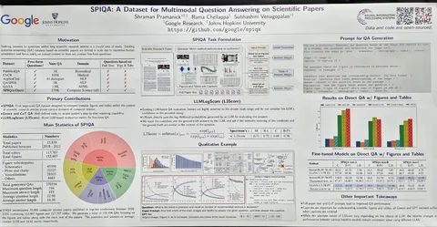
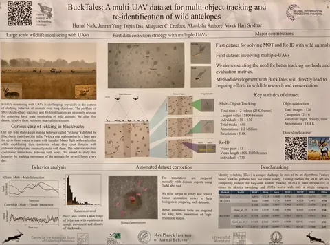

Продолжаем следить за NeurIPS 2024. Сегодня на связи Алексей Друца, Director, Technology Adoption at Yandex Cloud. Делимся его заметками о туториалах и статьях второго дня конференции.
Первым привлёк внимание туториал Evaluating Large Language Models — Principles, Approaches, and Applications о базовых подходах к оценке LLM. Особенно полезно ознакомиться тем, кто сталкивается с острым желанием контрагентов решить все проблемы за счёт получения модели идеального качества. Мы-то с вами знаем, что копать надо ещё и в сторону продуктовых метрик. Подробнее об этом туториале — в канале Душный NLP.
Туториал Opening the Language Model Pipeline: A Tutorial on Data Preparation, Model Training, and Adaptation от ребят из Ai2. Базовый обзор того, как готовится LLM, из каких этапов состоит пайплайн её построения. Подробно описано, как работать с данными для обучения, обрабатывать, вычищать, принимать решения по ним. Разбираются этапы предобучения и постобучения.
А ещё — несколько статей с увлекательными и местами неожиданными кейсами.
To Believe or Not to Believe Your LLM: IterativePrompting for Estimating Epistemic Uncertainty
Авторы предложили метрику для оценки уровня неопределённости LLM и того, насколько ей можно доверять. Метод основан на итеративных промптах без привлечения внешних данных.
AllClear: A Comprehensive Dataset and Benchmark for Cloud Removal in Satellite Imagery
Кейс с датасетом об удалении облаков со спутниковых снимков. Исследователи определяют, что происходит под облаком, за счёт данных в других диапазонах спектра. Потенциально полезная вещь для тех, кто занимается картами. Облака — те что на небе, а не вычислительные.
SPIQA: A dataset for multimodal question answering on scientific papers
Датасет по мультимодальным вопросам и ответам из научных статей. Пример работы со сложными текстами, специфической терминологией и задачей поиска ответа. Особенность датасета — наличие картинок и таблиц (которые часто встречаются в научных статьях), а главное — вопросов и ответов по их содержанию. Прогнав несколько моделей и разных вариаций промтов, делают вывод, что использование полного текста статьи и приемов Chain-of-Thoughts приводит к значительно более высокому перформансу модели на датасете.
BuckTales: A multi-UAV dataset for multi-object tracking and re-identification of wild antelopes
Авторы с помощью дронов и искусственного интеллекта создали набор данных для изучения диких антилоп. Он позволяет отслеживать движения множества животных одновременно и распознавать каждую особь в сложных условиях дикой природы.
Контент с NeurIPS продолжает залетать прямиком в вашу ленту. Будем на связи!
ML Underhood
#YaNeurIPS
 
